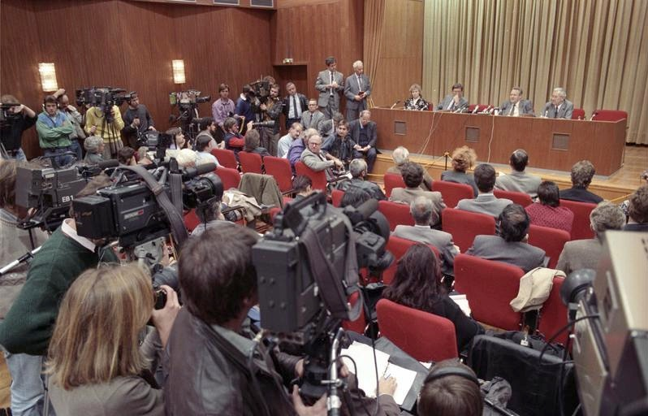
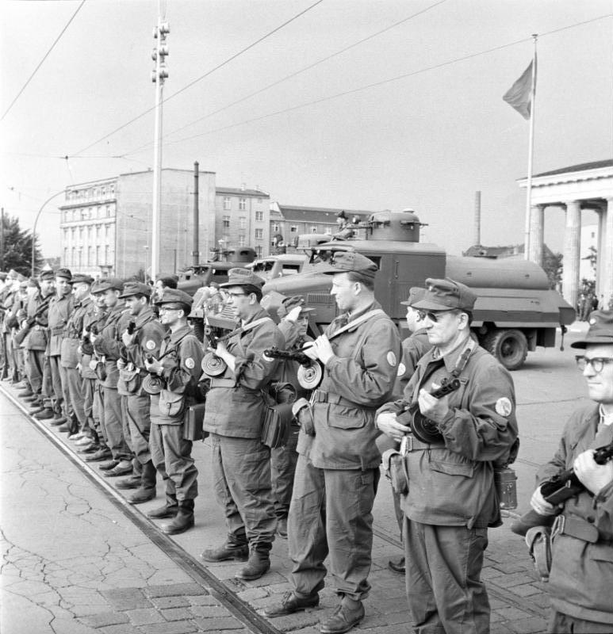
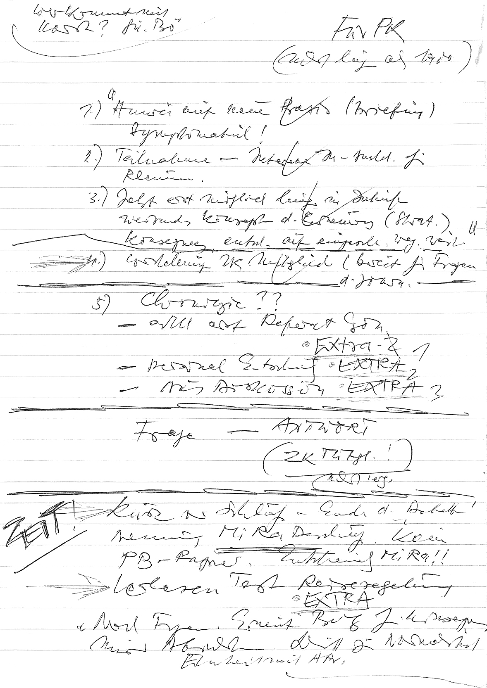
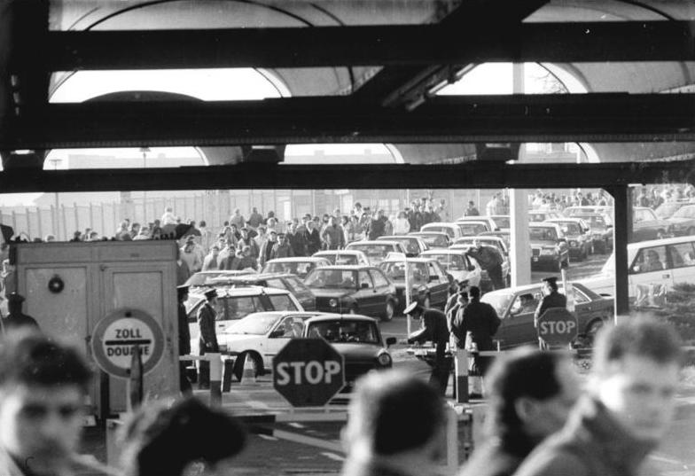
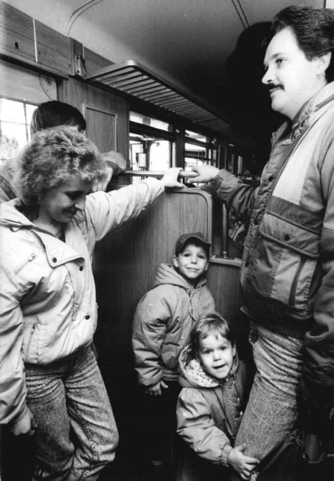

Pada 9 November 1989, sekitar pukul tujuh malam, Günter Schabowski — juru bicara rezim Jerman Timur — duduk di depan wartawan dan membacakan catatan tentang aturan perjalanan baru. Seorang wartawan bertanya: kapan aturan ini berlaku? Schabowski menjawab: "Das tritt nach meiner Kenntnis... ist das sofort... unverzüglich." ("Sejauh yang saya tahu... berlaku segera... tanpa penundaan.") Padahal teksnya seharusnya diembargo sampai besok pagi — dan tetap mensyaratkan permohonan visa. Dalam hitungan jam, ribuan warga Berlin Timur membanjiri perlintasan perbatasan. Sekitar pukul 23:30, gerbang di Bornholmer Straße dibuka. Malam itu dikenang sebagai malam Tembok Berlin runtuh.

Kenapa Tembok Itu Dibangun
Tembok Berlin tidak dibangun untuk menahan orang di luar — tapi untuk menahan orang di dalam. Sebelum 1961, sekitar 3,5 juta warga Jerman Timur (20% populasi) kabur lewat Berlin — banyak di antaranya profesional muda: dokter, insinyur, akademisi. Negara itu kehabisan orang.
Maka pada 13 Agustus 1961, perbatasan ditutup tengah malam. Yang pertama berdiri hanyalah kawat berduri yang dipasang tergesa-gesa oleh tentara dan polisi — lalu difortifikasi menjadi tembok beton, menara jaga, dan zona mati. Rezim menamainya Antifaschistischer Schutzwall ("Tembok Perlindungan Anti-Fasis"). Wali Kota Berlin Barat Willy Brandt menyebutnya "Tembok Memalukan" (Wall of Shame).

Selama 28 tahun berikutnya, lebih dari 100.000 orang mencoba kabur; lebih dari 5.000 berhasil. Korban tewas: 136 orang menurut penelitian Gedenkstätte Berliner Mauer / Center for Contemporary History (2005–2009) — sebagian sumber menyebut lebih dari 200. Tidak ada angka pasti; yang pasti, tembok itu dijaga dengan nyawa.
1989: Rezim Sudah Retak
Jatuhnya tembok bukan peristiwa yang muncul dari udara kosong. Sepanjang 1989, tekanan menumpuk:
Musim panas 1989: Hungaria membuka perbatasannya dengan Austria. Warga Jerman Timur tiba-tiba bisa memutari Tembok Berlin lewat negara tetangga. Bagi para penjaga perbatasan, tembok "sebagian kehilangan maknanya".
Oktober 1989 — Demonstrasi Senin di Leipzig: 9 Oktober, 70.000 orang turun ke jalan dengan damai. 16 Oktober: 150.000. 23 Oktober: 300.000. Massa yang damai melucuti rezim — "hari yang menentukan adalah di Leipzig". Pada 18 Oktober, pemimpin Erich Honecker digulingkan, digantikan Egon Krenz.
4 November 1989 — Alexanderplatz: 250.000 hingga 500.000 orang berdemonstrasi di Berlin Timur — demo non-negara terbesar dalam sejarah Jerman Timur. Tuntutannya: kebebasan berpendapat, kebebasan pers, kebebasan berkumpul. Bukan pembukaan tembok, bukan reunifikasi — demokratisasi. Schabowski yang mencoba berpidato di sana dicemooh turun dari panggung. Lima hari sebelum tembok jatuh, rezim sudah kehilangan wibawa di depan publiknya sendiri.
9 November: Satu Kalimat yang Salah Baca
Politbiro sebenarnya sudah menyetujui draf aturan perjalanan yang lebih longgar — sebuah proses terkontrol, dengan permohonan dan visa, yang seharusnya diumumkan esok paginya. Tapi Schabowski tidak hadir saat teks itu dibahas (ia dilewatkan saat Krenz membacakannya di sela pleno), dan ia menerima catatan itu menjelang konferensi pers tanpa membaca teliti.
Maka ketika seorang wartawan bertanya kapan aturan berlaku, ia menjawab sekenanya: "segera... tanpa penundaan." (Catatan redaksi: kesaksian berbeda soal siapa yang bertanya — koresponden ANSA Riccardo Ehrman dan reporter Bild Peter Brinkmann sama-sama mengklaim. Kami tidak menetapkan satu nama sebagai fakta.)

Pengumuman itu disiarkan televisi Barat — dan sampai ke telinga warga Berlin Timur lebih cepat daripada perintah resmi sampai ke para penjaga perbatasan. Ribuan orang bergerak ke perlintasan. Para penjaga, yang tidak menerima perintah yang jelas, kebingungan.
Bornholmer Straße: Keputusan Satu Orang
Di perlintasan Bornholmer Straße, utara Berlin Timur, Letnan Kolonel Harald Jäger — wakil komandan perlintasan, 28 tahun berdinas di kepolisian perbatasan — mendengar pengumuman itu sambil makan di ruang istirahat. Ia hampir tersedak rotinya: "Omong kosong apa yang baru saja diumumkan?" (Ironisnya: saat tembok didirikan 1961, Jäger muda bersorak mendukung.)

Massa di depan perlintasannya membesar — laporan menyebut hingga ~20.000 orang meneriakkan "Buka gerbangnya!" Jäger menelepon atasannya, Kolonel Rudi Ziegenhorn. Jawabannya: bubarkan massa. Telepon ke pejabat lain tak membantu. Jäger mula-mula membiarkan sebagian orang lewat dengan stempel paspor yang membatalkan hak mereka kembali — taktik meredakan massa. Tapi massa terus membesar.
Lalu ia membuat keputusan: menutup gerbang berisiko menumpahkan darah — massa dan anak buahnya sendiri. Sekitar pukul 23:30 (sebagian sumber menyebut 22:45), ia memerintahkan gerbang dibuka. Malam itu, warga Berlin Timur membanjiri Berlin Barat. Orang-orang naik ke atas Tembok di Gerbang Brandenburg. Dalam hari-hari berikutnya, warga memecah tembok dengan palu — Mauerspechte, "burung pelatuk tembok".
Catatan redaksi: klaim bahwa Jäger adalah "yang pertama" membuka perlintasan disengketakan — mantan kolonel Stasi Heinz Schäfer mengklaim membuka perlintasannya di Waltersdorf-Rudow beberapa jam lebih awal. Kami tidak mengklaim Bornholmer sebagai yang pertama. Jäger sendiri menolak label pahlawan: "Bukan saya yang membuka Tembok. Warga yang berdiri di sini malam itu — merekalah yang melakukannya."

Satu kalimat yang salah baca meruntuhkan 28 tahun beton.
Sesudahnya: Dari Tembok ke Reunifikasi
22 Desember 1989: Gerbang Brandenburg dibuka untuk pejalan kaki. 13 Juni 1990: pembongkaran penuh Tembok dimulai (selesai 1994). 3 Oktober 1990: Jerman resmi bersatu kembali — kurang dari setahun setelah malam 9 November.
Sejarawan Mary Elise Sarotte menyebut jatuhnya Tembok sebagai kecelakaan — "kesalahan birokrasi yang setengah komikal, yang tak lepas dari peran media Barat maupun arus sejarah." Sejarawan umumnya menafsirkan blunder Schabowski sebagai pemicu tak disengaja, bukan strategi rezim. Tapi sebagian analis mengingatkan: jangan melebih-lebihkan satu malam — keruntuhan ekonomi, demonstrasi berbulan-bulan, dan perebutan kekuasaan pasca-Honecker toh akan memaksa hasil serupa. Blunder itu pemicu, bukan penyebab tunggal.
Analisis: Dibaca Pakai Lensa Ketahanan Nasional
1. Kecepatan informasi mengalahkan rantai komando. Pengumuman TV sampai ke massa lebih cepat daripada perintah resmi sampai ke penjaga perbatasan. Negara yang rantai komunikasinya kalah cepat dari siaran TV akan disalip rakyatnya sendiri — pelajaran yang makin relevan di era media sosial.
2. Keputusan individu di ujung rantai menentukan berdarah atau tidak. Jäger memilih membuka gerbang karena menutupnya berisiko menumpahkan darah. Satu orang, satu keputusan, hitungan jam — sejarah berubah tanpa satu peluru pun malam itu. Kualitas manusia di ujung rantai komando adalah infrastruktur pertahanan.
3. Tembok paling kuat pun rapuh tanpa legitimasi. 28 tahun. Kawat berduri menjadi beton, menara jaga, perintah tembak, 136+ korban. Runtuh dalam satu malam begitu rakyat berhenti takut. Ketahanan sejati = kepercayaan rakyat, bukan beton.
Arsip & Referensi
Peristiwa dan angka di artikel ini diverifikasi silang dari sumber-sumber berikut:
- Wikipedia — "Berlin Wall", "Collapse of the Berlin Wall", "Günter Schabowski", "Harald Jäger", "List of deaths at the Berlin Wall", "Alexanderplatz demonstration" (kronologi & angka, diverifikasi silang).
- Anika Walke, Washington University in St. Louis — esai peringatan jatuhnya Tembok Berlin (kutipan Schabowski, demo 4 November).
- Chronik der Mauer (chronik-der-mauer.de) — kronik harian November 1989; penelitian korban tembok (136 orang).
- German History in Documents and Images — demonstrasi Alexanderplatz 4 November 1989.
- Wilson Quarterly — "Before the Fall" (demonstrasi Leipzig, kronologi musim gugur 1989).
- NPR / Soraya Sarhaddi Nelson — wawancara Harald Jäger (2014).
- Medindia / AFP — wawancara Harald Jäger (2014).
- Mary Elise Sarotte via Washington Post (2009) — penilaian "kecelakaan birokrasi".
Kredit foto arsip: Schabowski di konferensi pers 9 Nov 1989 — Bundesarchiv (via Wikimedia Commons), CC BY-SA 3.0 de; pembangunan tembok 1961 — Bundesarchiv, CC BY-SA 3.0 de; perlintasan Bornholmer Straße 18 Nov 1989 — Bundesarchiv / Robert Roeske, CC BY-SA 3.0 de; pengunjung DDR di Berlin Barat 10 Nov 1989 — Bundesarchiv, CC BY-SA 3.0 de; Notizzettel Schabowski — via Wikimedia Commons, CC BY-SA 3.0.
Catatan redaksi: foto Bornholmer Straße bertanggal 18 November 1989 (sembilan hari setelah malam kejadian) — dipakai sebagai ilustrasi perlintasannya, bukan diklaim sebagai foto malam 9 November. Jam pembukaan gerbang (23:30 vs 22:45) dan identitas wartawan yang bertanya (Ehrman vs Brinkmann) berbeda antar-sumber; kami menyajikan variasinya. Klaim "yang pertama membuka" disengketakan (klaim Heinz Schäfer soal Waltersdorf-Rudow) — tidak kami tetapkan sebagai fakta. Korban tembok hanya tersedia sebagai rentang (136 hingga >200).
Dari salah omong jadi runtuhnya simbol Perang Dingin. Versi ringkasnya ada di Instagram & TikTok @jejakkuasa — follow biar nggak ketinggalan titik balik berikutnya.